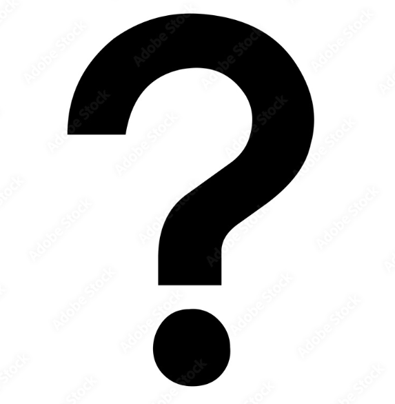

06-04-2023
My webpage is established!
Hey, I'm writing something.Some wikis have an edit button or link directly on the page being viewed if the user has permission to edit the page. This can lead to a text-based editing page where participants can structure and format wiki pages with a "lightweight markup language", sometimes known as wikitext, wiki markup or wikicode (it can also lead to a WYSIWYG editing page; see the paragraph after the table below). For example, starting lines of text with asterisks could create a bulleted list. The style and syntax of wikitexts can vary greatly among wiki implementations,[example needed] some of which also allow HTML tags.